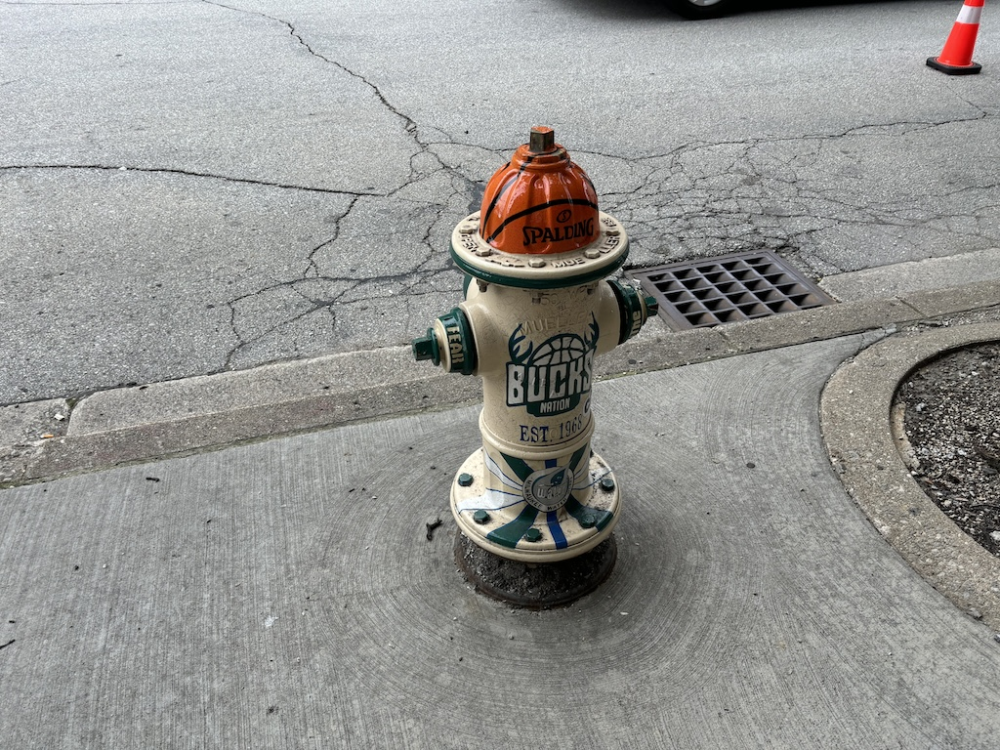
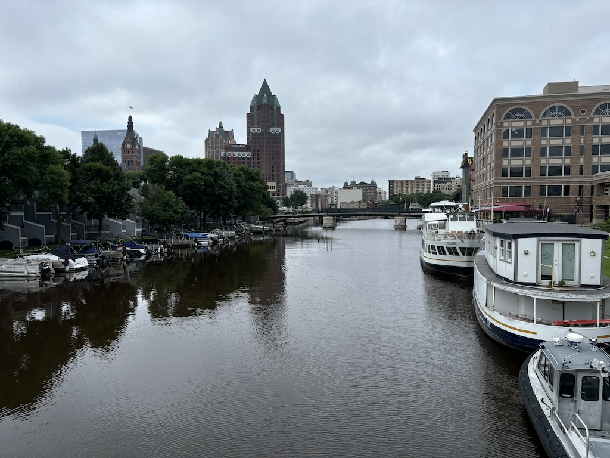
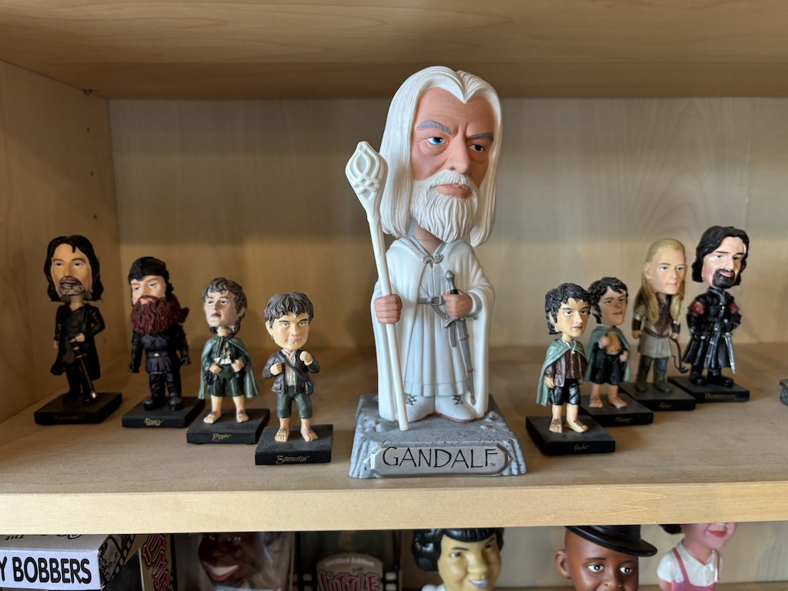
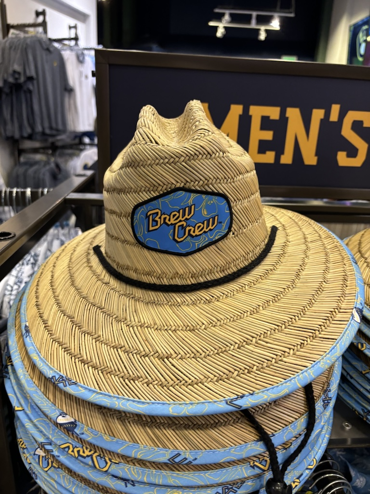
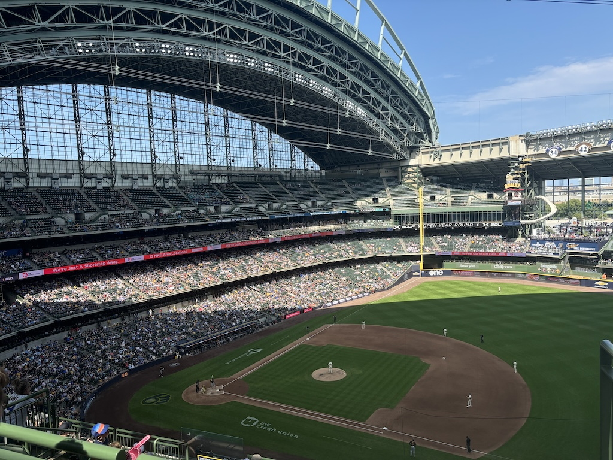
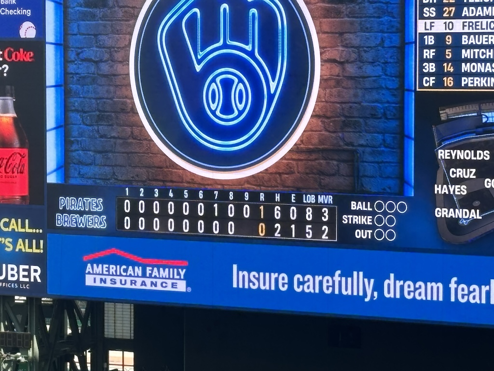
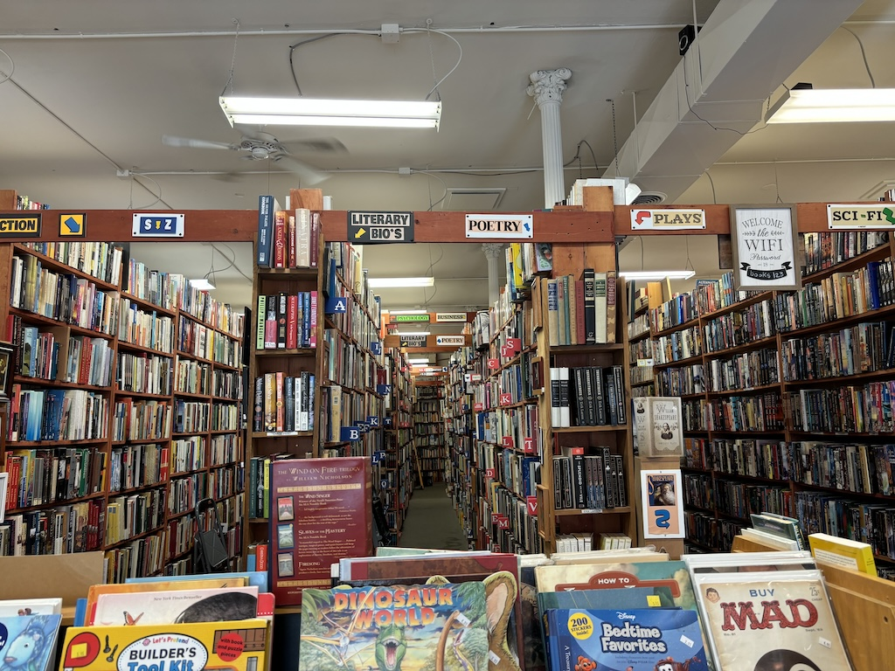
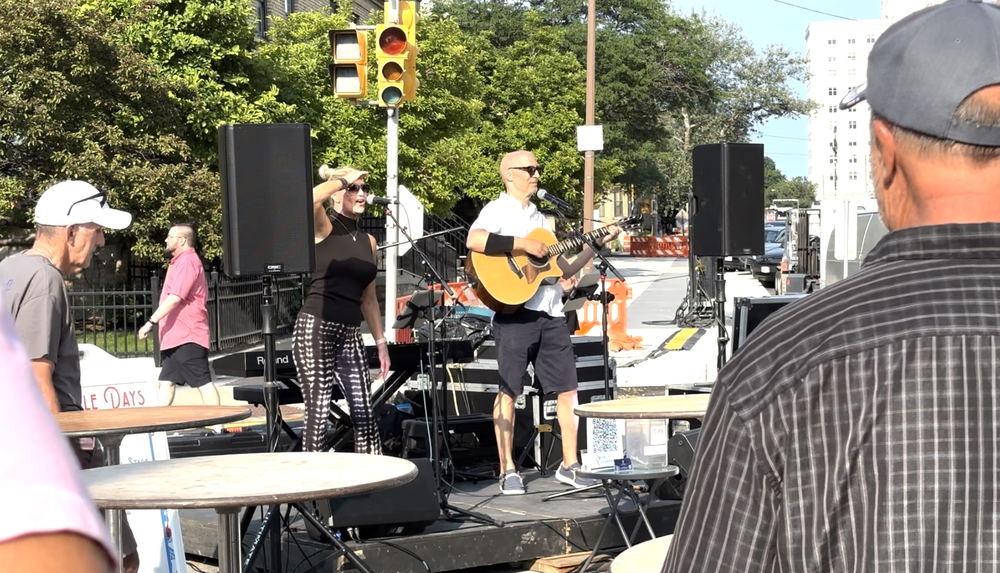
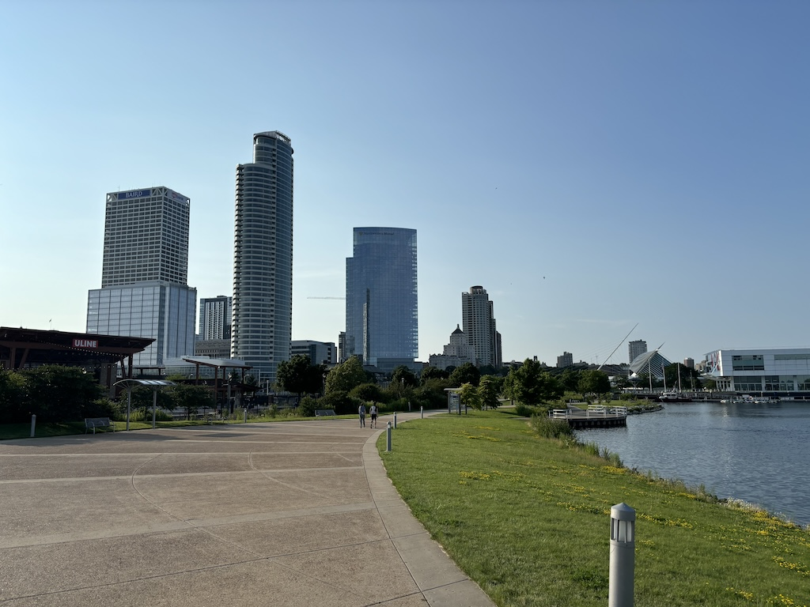

11th July 2024
During my time in Chicago I found out the Amtrak train to Milwaukee was only a couple of hours. It also boasted riding pretty much directly along the lake side which surely would be a beautiful ride. There was even a baseball game in town on - the Milwaukee Brewers were playing the Pittsburgh Pirates. So off to Illinois to see the Brewers I went.
Milwaukee felt to me like a quieter and even more spread out version of Chicago. Note that I mean this in the feel of the city center - I haven't checked but based on the population there's no way Milwaukee expands as far as Chicago does west away from the lake. But the streets here were broader still yet quieter with less cars whizzing around. Walking along the riverside as shown below it was very peaceful, even if sadly a little overcast.
After stopping into a breakfast place to get a fry up and coffee I discussed with the waitress what would be worth seeing in and around before the game. Right across the street from where we were was Milwaukees quite quirky National Bobblehead hall of fame and museum. Checking the prices and seeing it to only be $5 I decided I'd go, especially due to how unusual a sort of recommendation this was. Why would a city smaller than Bristol host the largest collection of bobbleheads in the US? I couldn't tell you but it was heaps entertaining. They had pretty much every pop culture character, celebrity figure or politician I could think of. Here's a snap I took of the fellowship that of course was also on display, although I don't remember Gandalf the White returning 3 times taller than Aragorn...
The small gift shop was very inexpensive so I decided to get a Milwaukee Brewers player bobble head as a souvenir. Luckily he's playing today; perhaps bringing him to the game will bring good luck.
After seeing this it was time to get the bus over to the Brewers stadium. A bunch of people of course were "tail-gating" in the car park, which was the first time I'd seen it. For those who don't know tail-gating is very simple. You park up in the stadium car park and "pre-game" (drink) by the back of your car. Having a whole line of cars doing this makes for a strong community and social vibe to the meet up. To my surprise it wasn't just young lads getting drunk - whole families with camping equipment were flipping burgers and making hot dogs. Someone brought a corn hole set out and were inviting people to play. It definitely surprised me how little of it was about getting drunk before going in for the game.
I headed into the merch store to see how much a baseball club at this league charges for a jersey. As per usual it was far too much to justify spending any money here, although I was almost persuaded by this Brew Crew hat. Out of context it would make for a great summer holiday hat and anyone in the know would appreciate it as a good but niche reference to the team.
The American Family Field stadium was huge. Squeezing my pennies (or dollars in this case) I'd bought a seat at the very top far corner of the stadium for only $16. The game is so clearly commentated and broadcasted on huge screens following the action was not difficult from this spot.
My biggest complaint there was probably everyone else - there was no shortage of fans who would come up from the bar, sit, eat a hot dog, talk about work or home life and then disappear back into the shops and bars out of site. Combine that with the rows being pretty tightly packed and a couple of loud voices and I missed a few hits. Which was a real shame because there were basically no hits in this game at all. Perhaps everyone else somehow knew it was going to be a dry game and abandoned watching it until the last innings. I expected better from Christian Yelich who struck out or was caught 3 times. After bringing him there in bobble head form for good luck I was convinced he'd hit a home run.
After the game I got the same bus back in to town and popped into this huge used bookstore (Downtown Books). I feel this is becoming a staple activity of mine - visit the local or famous bookstore in this town. This one definitely didn't cover all the latest releases but did have a monumental collection to pick from.
I wondered back towards the lake shore and stumbled into and oddly enough wandered into a small street party. A few stands selling jewellery, a few selling food and a band stage were all busy service customers and performing music. These two were playing country western and were damn good at it - a great little find. Kudos where it's due.
Finally with an hour before the train ride I walked around Lakeshore State Park The seafront is beautifully kept with very little rubbish and what I assume are wild geese relaxing by the water. People here were running, cycling and simply catching up with a friend - starbucks coffee in hand of course. But jokes aside it was very relaxing indeed.
The train back was uneventful and concluded this fun little day trip up coast.
If you want to see Chicago Deep Dish pizza the other side of this link is the place to be. Otherwise return home.
>